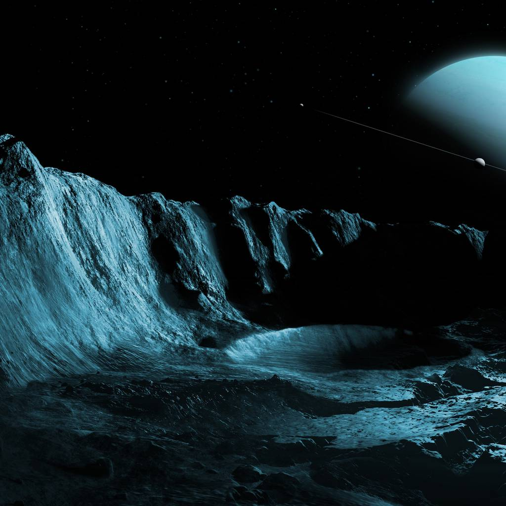
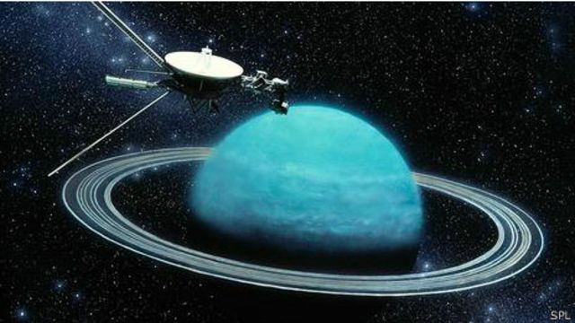
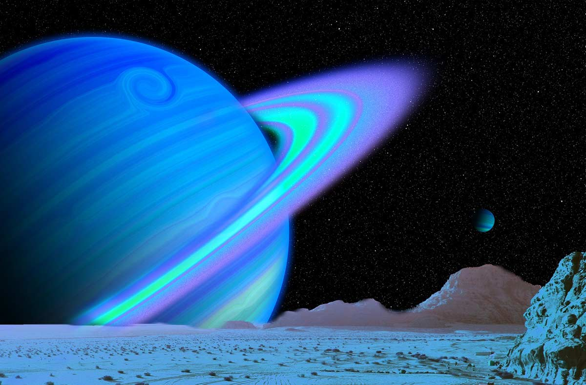
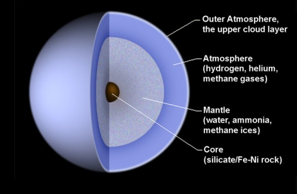
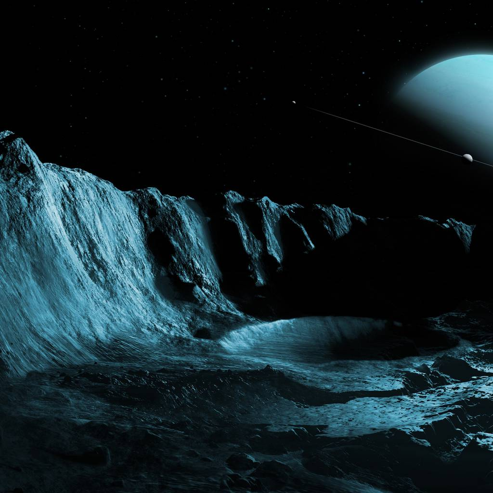
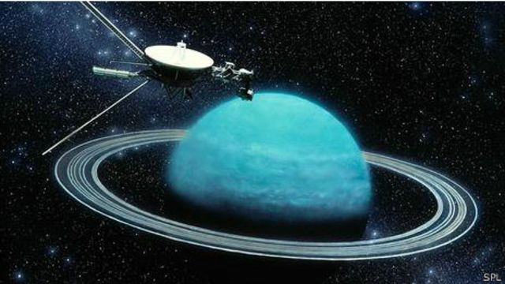
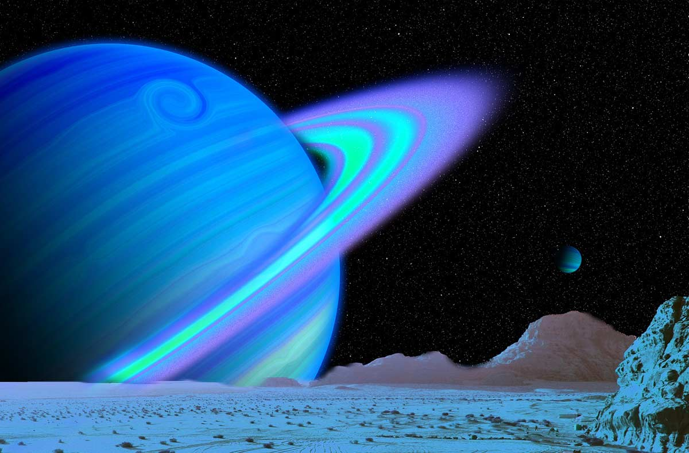
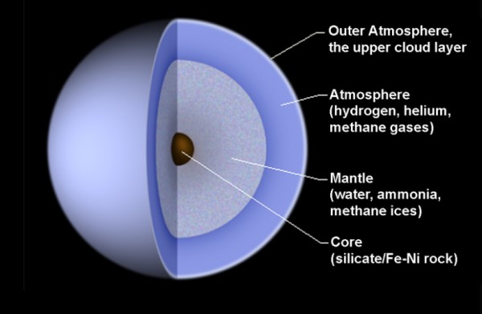
Urano es el séptimo planeta del sistema solar, el tercero de mayor tamaño, y el cuarto más masivo. Se llama así en honor de la divinidad griega del cielo Urano (del griego antiguo Οὐρανός), el padre de Crono (Saturno) y el abuelo de Zeus (Júpiter). Aunque es detectable a simple vista en el cielo nocturno, no fue catalogado como planeta por los astrónomos de la antigüedad debido a su escasa luminosidad y a la lentitud de su órbita. William Herschel anunció su descubrimiento el 13 de marzo de 1781, ampliando las fronteras entonces conocidas del sistema solar, por primera vez en la historia moderna. Urano es también el primer planeta descubierto por medio de un telescopio. Urano es similar en composición a Neptuno, y los dos tienen una composición diferente de los otros dos gigantes gaseosos (Júpiter y Saturno). Por ello, los astrónomos a veces los clasifican en una categoría diferente, los gigantes helados. La atmósfera de Urano, aunque es similar a la de Júpiter y Saturno por estar compuesta principalmente de hidrógeno y helio, contiene una proporción superior tanto de «hielo»nota como de agua, amoníaco y metano, junto con trazas de hidrocarburos. Posee la atmósfera planetaria más fría del sistema solar, con una temperatura mínima de 49 K (-224 °C). Asimismo, tiene una estructura de nubes muy compleja, acomodada por niveles, donde se cree que las nubes más bajas están compuestas de agua y las más altas de metano. En contraste, el interior de Urano se encuentra compuesto principalmente de hielo y roca. Como los otros planetas gigantes, Urano tiene un sistema de anillos, una magnetosfera, y numerosos satélites. El sistema de Urano tiene una configuración única respecto a los otros planetas puesto que su eje de rotación está muy inclinado, casi hasta su plano de revolución alrededor del Sol. Por lo tanto, sus polos norte y sur se encuentran en donde la mayoría de los otros planetas tienen el ecuador. Vistos desde la Tierra, los anillos de Urano dan el aspecto de que rodean el planeta como una diana, y que los satélites giran a su alrededor como las agujas de un reloj, aunque en 2007 y 2008, los anillos aparecían de lado. El 24 de enero de 1986, las imágenes del Voyager 2 mostraron a Urano como un planeta sin ninguna característica especial de luz visible e incluso sin bandas de nubes o tormentas asociadas con los otros gigantes. Sin embargo, los observadores terrestres han visto señales de cambios de estación y un aumento de la actividad meteorológica en los últimos años a medida que Urano se acerca a su equinoccio. Las velocidades del viento en Urano pueden llegar o incluso sobrepasar los 250 m/s (900 km/h).
| Característica | Urano |
|---|---|
| Distancia orbital (km) | 2.870.658.186 |
| Radio ecuatorial (km) | 25.362 |
| Volumen (km3) | 68.334.355.695.584 |
| Masa (kg) | 86.810.300 x1018 |
| Densidad (g/cm3) | 1,270 |
| Gravedad en superficie (m/s2) | 8,87 |
| Velocidad de escape (km/h) | 76.698 |
| Duración del día | 17 horas, 14 minutos |
| Duración del año | 84 años terrestres |
| Velocidad de su órbita alrededor del Sol (km/h) | 24.477 |
| Composición de la atmósfera (exosfera) | Hidrógeno, Helio y Metano |
| Lunas descubiertas | 27 |
El planeta Urano es el planeta con menos masa de entre los cuatro gigantes gaseosos. Su baja densidad, solo superior a la de Saturno, indica que está formado en gran parte por materiales ligeros: hielo, agua, amoníaco y metano.Esta composición que incluye distintos tipos de hielo en mayor proporción que gases hace que también se conozca este planeta como gigante de hielo. Esta denominación se aplica también a Neptuno para diferenciarlo de los otros gigantes gaseosos: Júpiter y Saturno.Urano es un planeta que solo ha sido visitado por la sonda Voyager 2. Esto hace que existan relativamente pocos datos científicos en los que poder basar un modelo de su estructura. Aún así, los datos conocidos indican que la estructura interna de Urano puede dividirse en tres capas.
En el centro habría un núcleo sólido con metales y silicatos. Este núcleo estaría recubierto por un manto de hielo formado por distintas sustancias en estado sólido y semifluido. Por encima de este manto hay una gran capa gaseosa que constituye la atmósfera. Esta atmósfera está formada principalmente por hidrógeno y helio que se encuentran a altas presiones en la capa más interior. La presión de estos gases decrece gradualmente hasta las capas más exteriores de la atmósfera, de modo que no existe una superficie donde una sonda podría eventualmente llegar a aterrizar.
Tamaños comparativos de los planetas terrestres, Jupiter a la izquierda, Saturno, Urano y Neptuno.

La atmósfera de Urano contiene principalmente hidrógeno y helio. En menor medida contiene también amoníaco y metano, que es la sustancia que le da su color azul distintivo.Debido a su naturaleza de gigante gaseoso o gigante helado, Urano no tiene una superficie sólida, sino que los gases de su atmósfera exterior se encuentran cada vez más comprimidos en las capas interiores.Esto hace que sea imposible enviar una sonda para que aterrice en Urano ya que no hay ninguna superficie en la que aterrizar. Debido a las altas presiones que se alcanzan, cualquier sonda que intentara entrar en la atmósfera de Urano sería destruída al cabo de pocos minutos.La rápida velocidad de rotación del planeta así como sus condiciones climatológicas hacen que el viento en su atmósfera puede llegar a alcanzar los 900 kilómetros por hora.
Urano sigue una órbita elíptica cuyo perihelio (punto más cercano al Sol) está a una distancia de 2735 millones de kilómetros y su afelio (punto más lejano al Sol) a 3006 millones de kilómetros.Esto hace que su órbita sea el doble de grande que la del siguiente planeta más cercano al Sol, Saturno. Esta gran distancia hace que la luz del Sol tarde cerca de dos horas y cuarenta y cinco minutos en alcanzar el planeta.
Además, también debido a la gran distancia, la luz solar que llega al planeta Urano es muy débil. Concretamente la intensidad de la luz solar en Urano es 400 veces más débil que en la Tierra.
La órbita de Urano tiene una gran relevancia histórica porque fue un elemento clave que llevó al descubrimiento del planeta Neptuno. Poco después de haber descubierto Urano, los astrónomos empezaron a publicar tablas con datos astronómicos para describir su órbita y predecir su posición en un instante futuro. Pronto se dieron cuenta de que la órbita de Urano parecía desviarse frecuentemente de la órbita descrita por las leyes de la mecánica orbital.Distintas teorías intentaron explicar el origen de estas desviaciones. Una de las hipótesis sugirió que podían explicarse por la presencia de un cuerpo de grandes dimensiones en los alrededores de Urano. Distintos astrónomos buscaron la solución a este problema y fue finalmente Urbain Le Verrier quien en 1846 publicó los cálculos que predecían la presencia de un octavo planeta en una órbita más lejana que Urano. Le Verrier pidió a Johann Gottfried Galle, astrónomo en el observatorio de Berlín, que utilizara sus telescopios para encontrar Neptuno en el punto indicado. La observación confirmó el descubrimiento de Neptuno y se convirtió en uno de los grandes éxitos de la ciencia del siglo XIX.
| 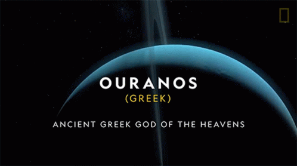 | Actualmente se conocen 27 satélites naturales de Urano. Los dos primeros (Titania y Oberón) fueron descubiertos por el mismo William Herschel en 1787, poco después de haber descubierto el planeta. |
Solo ha habido una sonda espacial que haya pasado cerca del planeta Urano. Fue la Voyager 2 en el año 1986, durante su misión de exploración del sistema solar exterior. Esto hace que hasta el momento no haya habido una misión específicamente diseñada para explorar Urano.
Llegar a los planetas exteriores del sistema solar, y especialmente a Urano y Neptuno, es una tarea técnicamente compleja debido a la gran distancia que los separa de la Tierra. Esto hace que este tipo de misiones tengan que planificarse con gran antelación. En los últimos años se han propuesto distintas misiones para explorar Urano. Sin embargo, el presupuesto limitado de las agencias espaciales ha hecho que hayan sido por el momento descartadas para destinar los recursos a otras misiones de mayor interés científico.
Aún así, es importante remarcar el gran éxito de la corta observación que hizo la Voyager 2, que llegó a Urano cinco años después de haber pasado cerca de Saturno. Durante su sobrevuelo de Urano fue capaz de descubrir 10 nuevas lunas del planeta, observar en detalle su sistema de anillos y también las características de su atmósfera.Además, tomó distintas fotografías en detalle de las superficies de cinco de sus lunas que permitieron conocer su actividad geológica. Uno de los descubrimientos más sorprendentes en este sentido fue la superficie de la luna Miranda, que resultó ser uno de los cuerpos más curiosos del sistema solar.
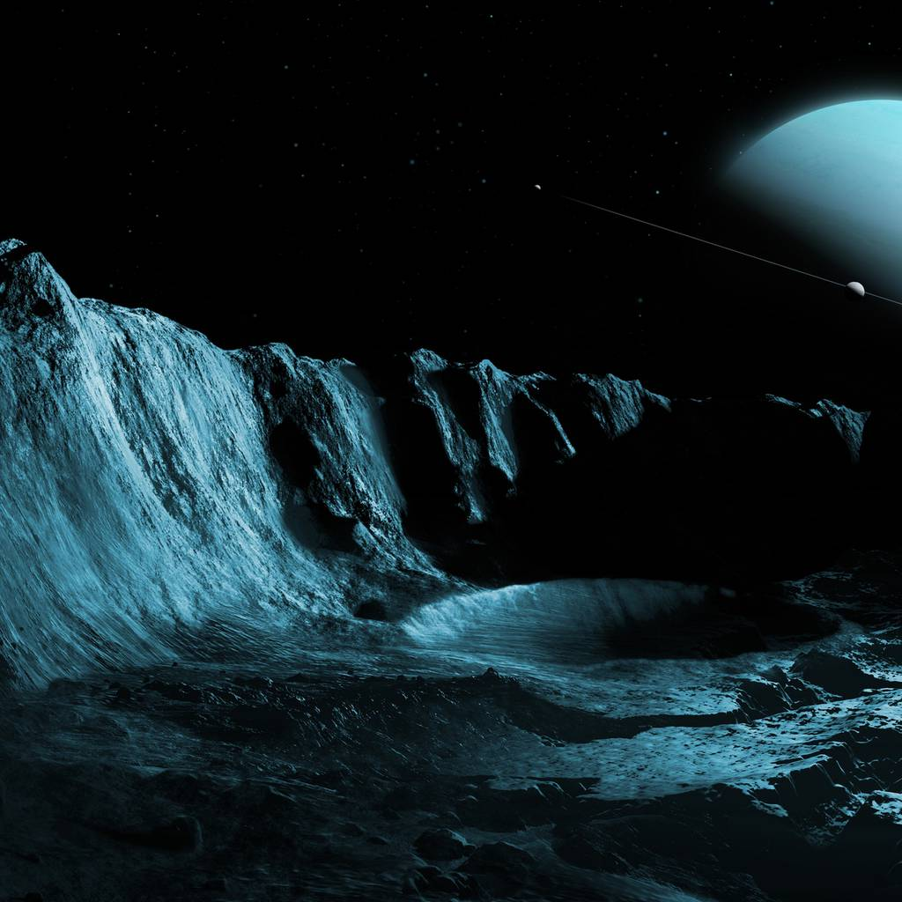
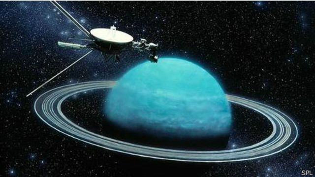
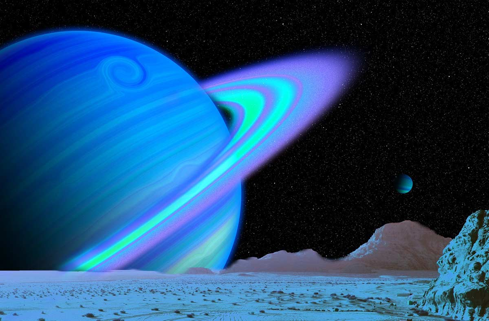
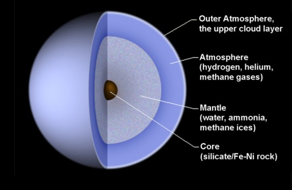